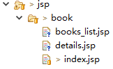
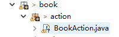
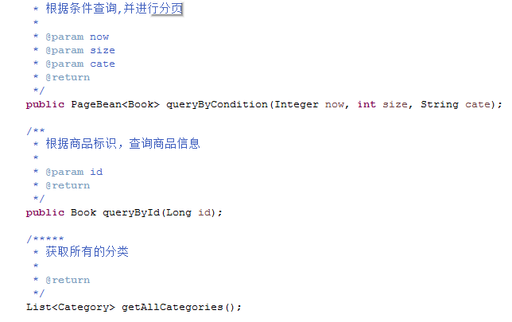
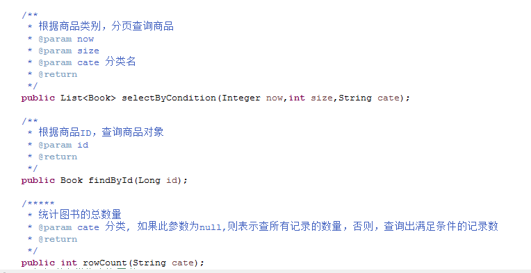
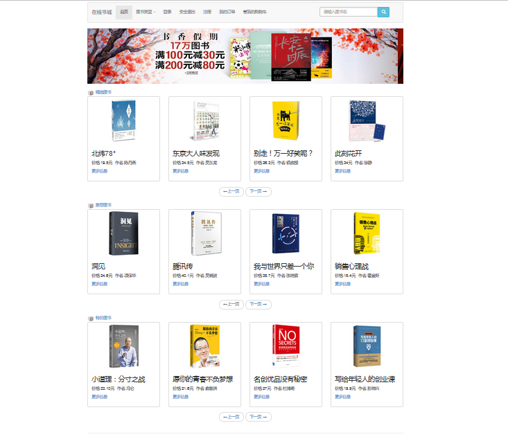
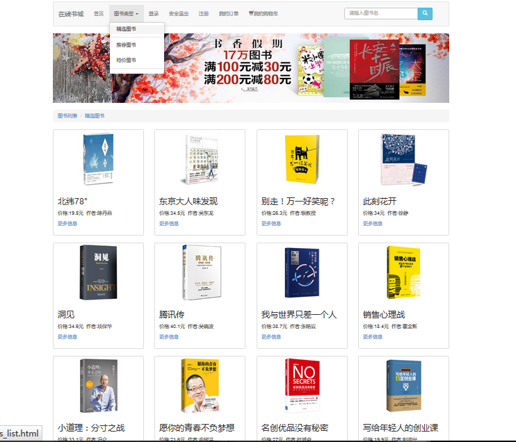

2.Day02
2.1.任务详情说明
此任务完成网站的展示，及商品的显示（包括分页显示），以及按类型查询和商品页的显示：
2.1.1.视图层:
 其中index.jsp显示商品列表 detail.jsp显示商品详情 books_list显示特殊商品列表 xxx.jsp根据你自己的开发情况而添加的jsp文件
2.1.2.控制层：
 BookAction图书商品控制器
注：以上的控制器划分只是做为参考，并不要求同学严格按此要求开发，你完全可以根据自己的需求来开发请求控制器，并且命名可以自由。
2.1.3.业务层：

2.1.4.数据访问层

以上的方法只是参考，真正的代码要根据自己的需求来写，不要只顾抄写，不思考！
2.1.5.商品首页的显示
1、首页的显示(/jsp/book/index.jsp): 
在首页中，显示了精选图书、新书和推荐图书，所有在首页的功能里要通过客户端发送请求到后台，查询出两本所有的 精选图书、新书和推荐图书（要用ajax分页），在册过程中，我们通过欢迎页面把请求发送到后台，在web.xml文件中配置一个欢迎页面：
<display-name>Book_Store</display-name>
<welcome-file-list>
<welcome-file>index.jsp</welcome-file>
</welcome-file-list>
在根目录下的index.jsp中配置转向请求：
<%@ page language="java" import="java.util.*" pageEncoding="UTF-8"%>
<%@ taglib uri="http://java.sun.com/jsp/jstl/core" prefix="c" %>
<c:set var="path" value="${pageContext.request.contextPath }" scope="application"></c:set>
<c:redirect url="/book/IndexAction"> </c:redirect>
在此处把web应用路径封装到全局作用中，方便以后提取 通过c:redirect标签转向后台的服务程序执行，即控制器.
控制器：【以下的代码只是参考，切记，不要硬抄】
// 获取精选图书
PageBean<Book> bestBook = bookService.queryByCondition(1, 4, "精选图书");
// 获取推荐图书
PageBean<Book> tuijianBook = bookService.queryByCondition(1, 4, "推荐图书");
// 获取特价图书
PageBean<Book> specialBook = bookService.queryByCondition(1, 4, "特价图书");
request.setAttribute("bestBook", bestBook);
request.setAttribute("tuijianBook", tuijianBook);
request.setAttribute("specialBook", specialBook);
// 转发
forward(request, response, true, "/WEB-INF/jsp/book/index.jsp");
转发和重定向的方法
/***************
* 转发或重定向请求
*
* @param request
* @param response
* @param b
* 为真，则转换请求，为false,则重定向请求
* @param target
* 目标资源
* @throws IOException
* @throws ServletException
*/
private void forward(HttpServletRequest request, HttpServletResponse response, boolean b, String target)
throws ServletException, IOException {
if (b) {
RequestDispatcher rd = getServletContext().getRequestDispatcher(target);
rd.forward(request, response);
return;
} else {
String contextPath = getServletContext().getContextPath();
response.sendRedirect(contextPath + target);
return;
}
}
业务层实现：【以下的代码只是参考，切记，不要硬抄】
public PageBean<Book> queryByCondition(Integer now, int size, String cate) {
// 1.调用dao获取数据
List<Book> books = ibd.selectByCondition(now, size, cate);
// 2.获取总记录数
int total = ibd.rowCount(cate);
// 3.创建PageBean对象
PageBean<Book> pb = new PageBean<>(total, size);
// 4.设置当前的页数和数据
pb.setCurrent(now);
pb.setDatas(books);
// 5.返回
return pb;
}
数据层实现：【以下的代码只是参考，切记，不要硬抄】
@Override
public List<Book> selectByCondition(Integer now, int size, String cate) {
// 通过模板来执行
return (List<Book>) template.execute(new HibernateCallback() {
@Override
public Object doInHibernate(Session ses) throws HibernateException {
Criteria c = ses.createCriteria(Book.class, "b");
//
if (cate != null && cate.trim().length() > 0) {
c.createAlias("b.category", "c").add(Restrictions.eq("c.name", cate));
}
// 返回
return c.addOrder(Order.asc("b.id")).setFirstResult((now - 1) * size).setMaxResults(size)
.setCacheable(true).list();
}
});
}
@Override
public Book findById(Long id) {
return (Book) template.execute(new HibernateCallback() {
@Override
public Object doInHibernate(Session ses) throws HibernateException {
return ses.get(Book.class, id);
}
});
}
@Override
public int rowCount(String cate) {
Long count = (Long) template.execute(new HibernateCallback() {
@Override
public Object doInHibernate(Session ses) throws HibernateException {
Criteria c = ses.createCriteria(Book.class, "b");
// 判断
if (cate != null) {
c.createAlias("b.category", "c").add(Restrictions.eq("c.name", cate));
}
// 返回
return c.setProjection(Projections.rowCount()).setCacheable(true).uniqueResult();
}
});
return count.intValue();
}
视图层的index.jsp页面案例代码由项目经理在课堂讲解过程中给予
2.1.6.图书的分类查询：
点击导航的精选图书，进行分类查询： 页面显示： 
登录的控制器实现：【请自行实现】 登录的业务实现：【请自行实现】 登录的数据访问实现：【请自行实现】 JSP实现【请自行实现】
2.1.7.商品详情页：
在商品首页，以及分类显示的页面，点击图书，查看详情页面 页面显示:
控制器实现：【请自行实现】 业务实现：【请自行实现】 数据访问的实现：【请自行实现】 JSP实现【请自行实现】